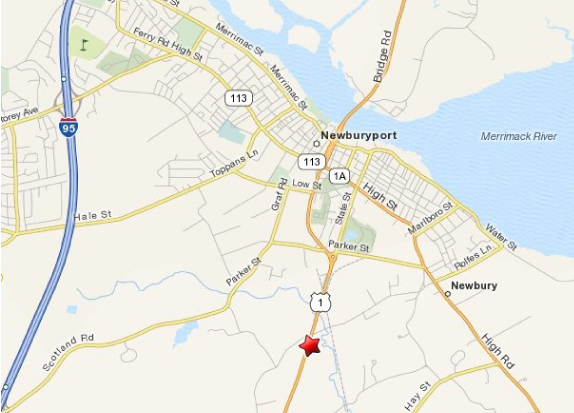

Welcome
...to Our International Collection of Spiritual & Healing Gifts and Books
Please visit us in person at 72 Newburyport Turnpike Newbury, MA (Rte 1)
We are just a walk away from the train depot in Newburport, or a 10-minute car ride from downtown Newburport.
Please call ahead to check shop hours: (978) 462-4649
